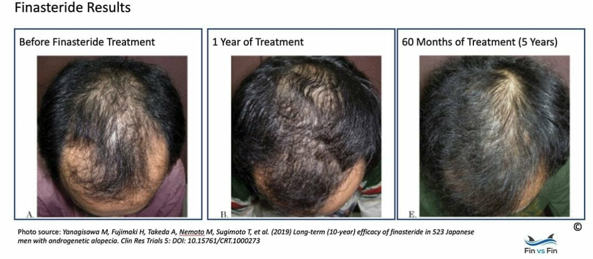
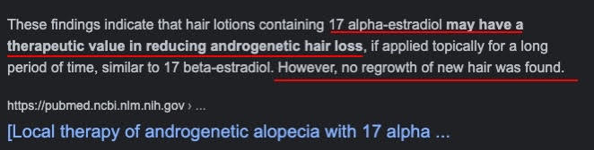
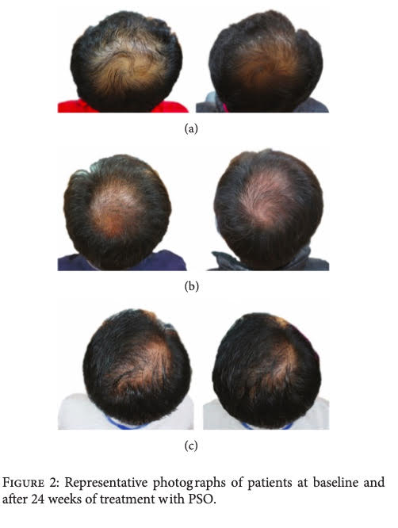

Obniżenie poziomu hormonu DHT - leki lub suplementy
Przedstawiam warianty:
- od najbardziej skutecznego, ale obarczonego potencjalnymi efektami ubocznymi
- do najmniej skutecznego ale bezpiecznego
a) finasteryd w tabletkach (na receptę od dermatologa)
Finasteryd blokuje enzym 5-alfa-reduktaza, co obniża o 65% DHT w całym organizmie i o 50% DHT w
skórze głowy i zauważalnie spowalnia łysienie androgenowe u 80% leczonych, a u 30% osób daje
lekki odrost.
Potencjalnym efektem ubocznym u kobiet może być nasilenie skłonności do depresji i mgła umysłowa.
Ewentualne efekty uboczne mogą pojawić się między 1 tygodniem i 2 miesiącem.
Po odstawieniu finasterydu, efekty uboczne mijają do maksymalnie 2 miesięcy.
Po dłuższym stosowaniu, można robić sobie przerwy od finasterydu 2x w roku po miesiąc
czasu, nie powinno mieć to wpływ na stan włosów.
Po odstawieniu finasterydu, włosy po 6-12 miesiącach wrócą do takiego stanu, jakbyśmy nigdy nie
stosowali leku (na początku mogą zauważalnie wypadać).
Efekty finasterydu uzyskane w badaniach naukowych u mężczyzn (po roku i 5 latach) - możliwe do uzyskania,
jeśli dobrze reaguje się na lek.

b) finasteryd 0,025% 1ml codziennie (wcierka)
Stężenie 0,025% 1ml blokuje w skórze głowy DHT do 50% , a w całym organiźmie DHT spada o około
25%, co minimalizuje ryzyko efektów ubocznych.
Można zacząć od wcierki, aby "oswoić się" z finasterydem w mniejszej dawce.
Aby sporządzić wcierkę, należy pokruszyć i rozpuścić 1mg w 4ml wcierki:
~22mg na 90ml wcierki Serioxyl Denser Hair
Serioxyl Denser Hair ma bardzo wygodny aplikator w formie pipety, z kreską zaznaczoną na 1.5 ml
Wcierkę sporządzić zgodnie z instrukcją
Na późniejszym etapie finasteryd można rozpuszczać w Alopexy (w minoxidilu) ale nie zalecam
wprowadzać obu leków na raz
Należy najpierw ocenić czy sam finasteryd działa, a następnie zmianę po dodaniu minoxidilu.
Dlatego na początek dobrze rozpuszczać finasteryd w Serioxyl Denser Hair (Stemoxidine 5%), który
jest dwukrotnie słabszym stymulatorem niż Minoxidil 5% - zaburza to ocenę w mniejszym stopniu, niż w
przypadku zmieszania finasterydu z minoxidilem.
c) finasteryd 0,01% 1ml codziennie (wcierka)
Takie stężenie blokuje DHT w skórze głowy do 30%, ale jej zaletą jest prawie zerowa absorpcja
systemowa finasterydu (brak potencjalnych efektów ubocznych).
Wcierkę z finasterydem o stężeniu 0,01% można próbować dodatkowo łączyć razem z olejem z pestek
dyni lub palmą sabałową, które spowalniają potencjalne łysienie androgenowe również w strefie
dawczej z tyłu głowy.
Aby sporządzić wcierkę, należy pokruszyć i rozpuścić 1mg w 10ml wcierki
- 9mg na 90ml wcierki Serioxyl Denser Hair
Można również zamówić wcierkę bez recepty z Andory (gdzie jest bardziej liberalne prawo) z
legalnej apteki Farmacia Androrra
Wcierkę najlepiej zamówić z tzw. Trichosolem (lepszy rozpuszczalnik do finasterydu niż w leku
robionym przez aptekę w Polsce)
Ponieważ leki nie mogą być oferowane na stronie internetowej, zamówienie należy złożyć
pisząc po angielsku maila na adres:
"Hello, I would like to order Finasteride 0,01% 50ml in Trichosol"
- można też zamówić wcierkę Finasteride 0,01% + Minoxidil 7% (optymalne stężenie Minoxidilu to 7%)
d) Alfatradiol codziennie (wcierka)
Alfatradiol nie obniża bezpośrednio poziomu 5-alfa-reduktazy, natomiast zwiększa aktywność enzymu
aromataza, przez co mniej testosteronu zamienia się w DHT, a powstaje więcej estrogenu, który ma działanie
rewitalizujące na mieszki włosowe.
Alfatradiol jest do kupienia z niemieckiej apteki jako produkt o nazwie Pantostin.
Alfatradiol nie ma efektów ubocznych, można go łączyć razem z olejem z pestek dyni lub palmą sabałową.
Alternatywnie, robiąc sobie przerwy od finasterydu (w tabletkach lub wcierce), można zastępować go
Alfatradiolem we wcierce.
Należy stosować wcierkę raz dziennie, codziennie.
Według producenta, należy stosować 3ml, ale to dość duża ilość - stosowanie 2ml na pokrycie pożądanego
obszaru skóry głowy też powinno dać dobry efekt.
Po przetestowaniu leku, można zamówić wyższe stężenie z apteki Farmacia Androrra i stosować tylko 1ml
dziennie zamiast 3ml.
"Hello, I would like to order 17-alfa-estradiol 0,1% 50ml in Trichosol"
Alfatradiolem to lek bez recepty, rekomendowany w Niemczech na łysienie androgenowe, ze względu na mniejszą
skuteczność niż finasteryd nie jest tak popularny. Spowalnia łysienie androgenowe, natomiast nie daje
zauważalnego odrostu - poniżej badanie naukowe z 1980 roku.

Alfatradiol to inna nazwa dla 17-alfa-estradiolu, który jest syntetyczną odmianą "prawdziwego"
17-beta-estradiolu, natomiast wywiera 100x słabszy efekt biologiczny i nie ma skutków ubocznych
17-beta-estradiolu.
e) palma sabałowa lub olej z pestek dyni
Palma sabałowa, olej z pestek dynii, wierzbownica drobnokwiatowa i korzeń pokrzywy to tzw. "naturalne blokery
DHT" - mogą delikatnie obniżać poziom DHT, ale dodatkowo też blokują receptor androgenowy. Są około 2x słabszą
alternatywą dla finasterydu.
W przypadku kobiet, nie zaleca się stosować ich razem z antykoncepcją.
Suplement który zawiera wszystkie powyższe blokery:
Prostimen (90 tabletek)
Podobny suplement, głównie z palmą sabałową:
Skrzypovita Men (30 tabletek)
Palma sabałowa i olej z pestek dyni działają podobnie, osobiście polecam olej - obniża DHT bez efektów
ubocznych, zawiera cynk i inne cenne pierwiastki oraz witaminy A, C, E, B1, B2, B3, B7 (biotynę), korzystne dla
zdrowia skóry i włosów.
Olej premium - styryjski, z Austrii (pół łyżeczki dziennie)
Lub olej w kapsułkach
Naturalne blokery sprawdzają się w łagodnych typach łysienia androgenowego i mogą nie wystarczyć do
zauważalnego spowolnienia miniaturyzacji mieszków włosowych.
Dają "efekt blokowania DHT" do ~30% w całym organiźmie, ale bez ewentualnych skutków ubocznych
finasterydu.
Naturalne blokery można łączyć z wcierką z finasterydem 0,01% lub Alfatradiolem, natomiast w połączeniu
z finasterydem w tabletkach lub wcierką 0,025% nie dadzą jeszcze lepszego efektu.
Przykładowe efekty jakie może dawać suplementacja oleju po 24 tygodniach - odrost niewielki, ale moim
zdaniem efekt jest dobry, bo włosy nie uległy pogorszeniu.
